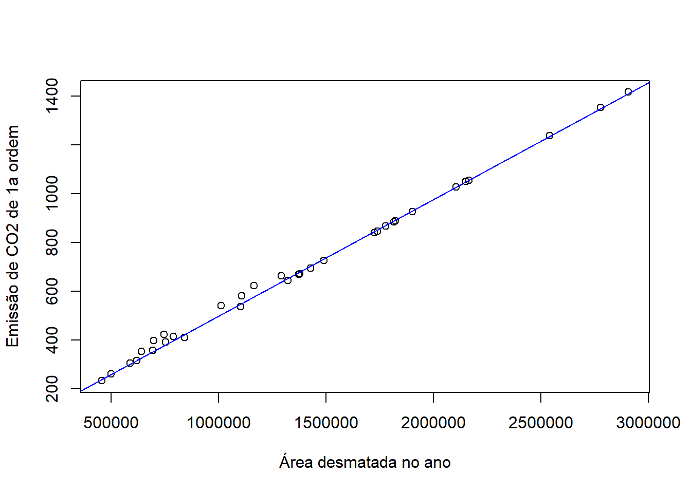
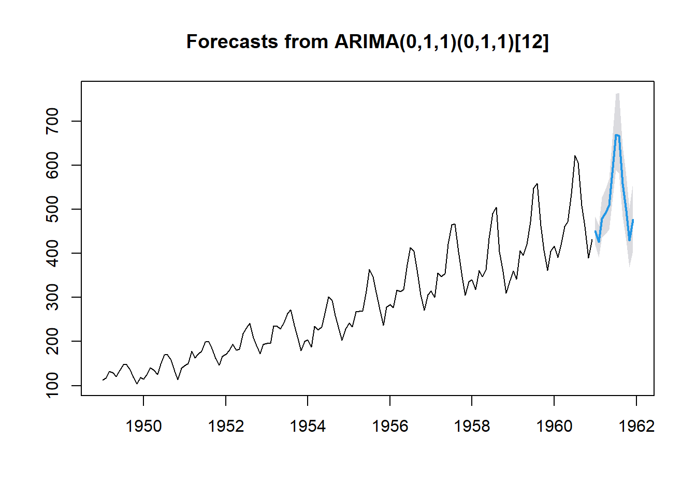
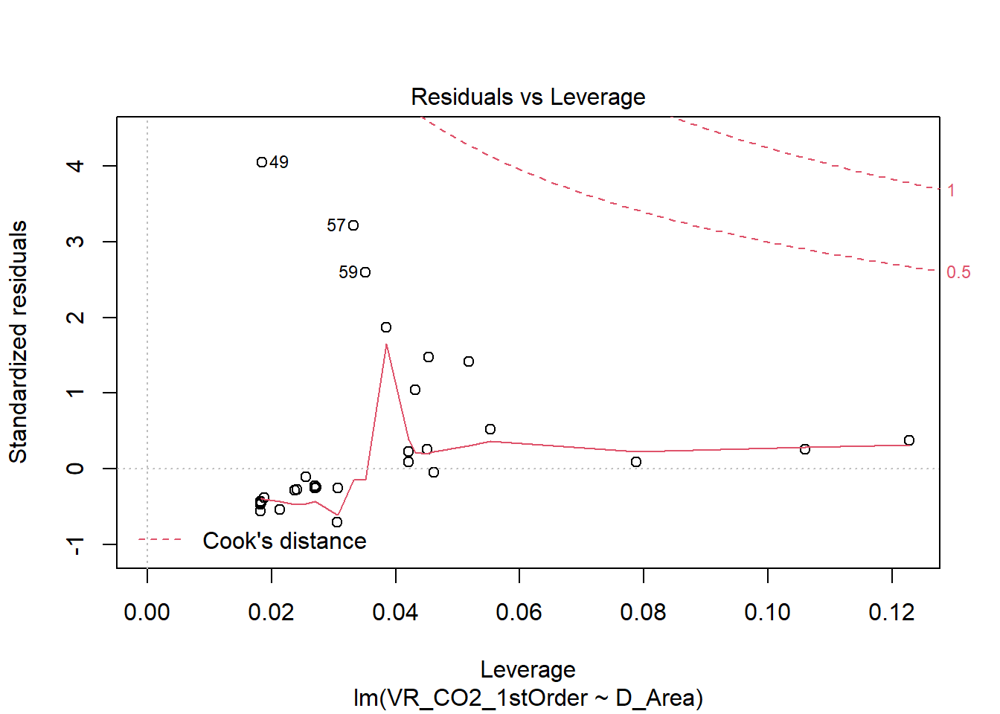

Capítulo 3 Modelos lineares
Resumidamente, modelos lineares são utilizados para resumir relações observadas a partir de dados, no caso, ambientais, em uma linha reta. Em um modelo linear descreve-se o comportamento de uma variável dependente (ou variável resposta, y) como função de uma ou mais variáveis independentes (ou variáveis explicativas, x).
3.1 Covariância
A Covariância, denotada \(\sigma_{xy}\), descreve a variação, em relação a média, entre duas variáveis.
\[cov(x,y) = \frac{\sum(x_i - \overline{x})}{n-1}\]
Portanto, é possível saber se ambas variáveis desviam na mesma direção (covariância positiva) ou se desviam em direções opostas (covariância negativa). Caso a covariância entre duas variáveis seja zero, a conclusão é que as variáveis são independentes.
3.2 Correlação
A Correlação é útil para medir a relação linear entre duas variáveis x e y, denotada por \(\rho_{xy}\).
\[\rho_xy = \frac{cov(x,Y)}{\sqrt(V(x)V(Y))}\]
Sendo assim, duas variáveis podem estar relacionadas das seguintes formas:
- Positivamente relacionadas. Ou seja, se x aumenta, y aumenta. E o mesmo ocorre para caso X diminua (Y diminui) - Correlação positiva;
- Negativamente relacionadas. Ou seja, se x aumenta, y diminui. E o mesmo ocorre para caso x diminua (Y aumenta) - Correlação negativa;
- Não há relação entre as duas variáveis.
Uma forma gráfica de visualizar a correlação das variáveis que apresenta grande utilidade é a partir do Diagrama de Dispersão. O diagrama traz informações importantes porque mostra se a relação entre as variáveis é linear ou não, se existem outliers no conjunto de dados e traz uma ideia de quão forte é o relacionamento entre as variáveis.
É importante afirmar que o valor não implica causalidade, mas quantifica a relação entre as variáveis selecionadas.
3.2.1 Coeficiente de Pearson (r)
O Coeficiente de Pearson, também chamado de coeficiente de correlação da amostra \(r_{xy}\), mede a força da relação linear entre duas variáveis aleatórias x e y. Se duas variáveis relacionarem-se perfeitamente com inclinação positiva, \(r_{xy}=1\); com inclinação negativa, \(r_{xy}=-1\); se \(r_{xy}=0\), não há relação entre as variáveis.
De acordo com Filho e Júnior (2009), existem métricas diferentes de acordo com cada autor:
Cohen (1998) considera valores entre 0,10 e 0,29 pequenos; entre 0,30 e 0,49, médios; e entre 0,50 e 1, grandes.
Dancey e Reidy (2005) considera valores entre 0,10 e 0,30 pequenos; entre 0,40 e 0,60 moderados; e de 0,70 até 1, grandes.
O consenso é que quanto mais próximo de 1, maior a força da relação linear entre as variáveis, independente do sinal.
3.3 Regressão linear simples
A partir da regressão, é possível obter a relação matemática que descreva a relação entre duas ou mais variáveis. A análise de regressão é uma coleção de ferramentas estatísticas que permite a modelagem e inferência de uma variável dependente (y) com uma ou mais variáveis independentes (x). No caso da regressão linear simples, somente existe uma variável independente; para a regressão linear múltipla, mais de uma. Dessa forma, o formato básico do modelo de regressão linear é:
\[Y = \beta_0 + \beta_1X_1 + e_1\], sendo \(\beta_0\) o coeficiente do intercepto, \(\beta_1\) o coeficiente de inclinação, \(e_1\) o erro no ajuste do modelo para a observação y.
De acordo com Montgomery & Runger (2021), o modelo de regressão é, na verdade, uma linha de valores médios. Ou seja, “a altura da linha de regressão em qualquer valor de x é apenas o valor esperado de Y para aquele x. O coeficiente angular, \(\beta_1\), pode ser interpretado como a mudança na média de Y para uma mudança unitária em x. Além disso, a variabilidade de Y, em um valor particular de x, é determinada pela variância do erro \(\sigma^2\)”. Portanto, há uma distribuição de valores de Y em cada x de forma que a variância da distribuição é constante em cada x.
O erro \(e_1\) é estimado pela variabilidade de Y que o modelo criado não consegue explicar, ou seja, o resíduo pode ser quantificado por \(\widehat{Y}-Y\). Os resíduos conseguem indicar se as suposições do modelo foram violadas e, por isso, agora conheceremos as condições necessárias para a aplicação da Regressão Linear.
3.3.1 Condições
São assumidas algumas hipóteses sobre os dados de entrada na Regressão Linear:
Linearidade: a relação entre X e Y deve ser linear;
Homocedasticidade: a variância da variável dependente (Y) deve ser constante para todos os valores das variáveis independentes (X);
Normalidade: para um valor fixo de X, Y é uma variável aleatória com distribuição normal. Os erros também devem ser normalmente distribuídos; Dentre diversos testes possíveis, para verificar a não-normalidade dos erros é possível realizar o Teste de Shapiro-Wilk ou um gráfico de Probabilidade Normal com objetivo de verificar visualmente se os dados do modelo apresentam distribuição normal.
Independência dos resíduos: como Yi e Yj são valores estatisticamente independentes (falta de correlação), os resíduos também deverão ser independentes;
Ausência de outliers influentes: não devem existir outliers que influenciem consideravelmente o modelo;
3.3.2 Coeficiente de Determinação (R²)
O Coeficiente de Determinação é utilizado frequentemente pra avaliar a adequação de um modelo de regressão. É definido pelo quadrado do coeficiente de correlação entre X e Y. Quanto mais próximo de 1, maior a quantidade de variabilidade nos dados explicada pelo modelo de regressão.
De acordo com Montgomery (2021), o R² pode trazer interpretações errôneas, já que sempre é possível fazer com que R² seja unitário realizando a adição de mais termos ao modelo. Ou seja, R² aumenta se for adicionado uma nova variável ao modelo, mas isso não indica que o modelo esteja mais adequado.
Aplicação
Para a aplicação serão utilizados dados de emissões dos gases de efeito estufa (GEE) por mudanças de cobertura da terra da Amazônia Legal disponibilizados pelo INPE (Instituto Nacional de Pesquisas Espaciais). Será representada a relação entre a área desmatada por ano e a emissão de 1ª ordem de \(CO_2\) na Amazônia Legal.A estimativa de 1ª ordem supõe que, de modo simplificado, 100% das emissões ocorreram no momento da mudança de uso/cobertura.
Um primeiro passo será carregar os dados:
options("install.lock"=FALSE)
## Carregar pacotes que serão usados
## Checando repositório
setwd("C:/Users/Luiz Arthur/Dropbox/PC/Documents/UFABC Beatriz/TG Beatriz Lima/Dados")
## Carregando base de dados
dados0 <- read.csv2("CO2Amazonia.csv")
dados <- na.omit(dados0)
View(dados)
data_size= dim(dados)Agora que os dados foram carregados, o segundo passo será entender os dados. Para saber algumas propriedade dos dados carregados, será utilizado o comando head()`, que apresentará uma amostra dos dados, esummary()`, que apresenta as estatísticas básicas dos dados (média, mediana, 1º quartil, etc).
head(dados)## Year D_AreaAcc D_Area DEGRAD_Area X. VR_CO2_1stOrder VR_CO2_2ndOrder
## 1 1960 842754 842754 0 - 411 133
## 2 1961 1685508 842754 0 - 411 222
## 3 1962 2528262 842754 0 - 411 276
## 4 1963 3371016 842754 0 - 411 311
## 5 1964 4213770 842754 0 - 411 334
## 6 1965 5056524 842754 0 - 411 350
## SV_CO2Emission SV_CO2Absorption X..1 DEGRAD_CO2Emission DEGRAD_CO2Absorption
## 1 0 0 - 0 0
## 2 0 0 - 0 0
## 3 0 0 - 0 0
## 4 0 -2 - 0 0
## 5 0 -4 - 0 0
## 6 0 -7 - 0 0
## X..2 NET_1st_Order NET_2nd_Order
## 1 - 411 133
## 2 - 411 222
## 3 - 411 276
## 4 - 409 309
## 5 - 407 329
## 6 - 404 342summary(dados)## Year D_AreaAcc D_Area DEGRAD_Area
## Min. :1960 Min. : 842754 Min. : 457100 Min. : 0
## 1st Qu.:1975 1st Qu.:13484064 1st Qu.: 842754 1st Qu.: 0
## Median :1990 Median :40302326 Median :1103000 Median : 155872
## Mean :1990 Mean :37464148 Mean :1324505 Mean : 403505
## 3rd Qu.:2005 3rd Qu.:61076244 3rd Qu.:1822600 3rd Qu.: 155872
## Max. :2020 Max. :69723152 Max. :2905900 Max. :2741165
## X. VR_CO2_1stOrder VR_CO2_2ndOrder SV_CO2Emission
## Length:61 Min. : 234.0 Min. : 133.0 Min. : 0.0
## Class :character 1st Qu.: 411.0 1st Qu.: 381.0 1st Qu.: 7.0
## Mode :character Median : 541.0 Median : 603.0 Median : 39.0
## Mean : 653.6 Mean : 616.2 Mean : 48.7
## 3rd Qu.: 888.0 3rd Qu.: 844.0 3rd Qu.: 83.0
## Max. :1416.0 Max. :1107.0 Max. :138.0
## SV_CO2Absorption X..1 DEGRAD_CO2Emission DEGRAD_CO2Absorption
## Min. :-185.00 Length:61 Min. : 0.00 Min. :-245.00
## 1st Qu.:-143.00 Class :character 1st Qu.: 0.00 1st Qu.: -31.00
## Median : -81.00 Mode :character Median : 34.00 Median : -18.00
## Mean : -86.03 Mean : 81.52 Mean : -54.59
## 3rd Qu.: -28.00 3rd Qu.: 34.00 3rd Qu.: 0.00
## Max. : 0.00 Max. :691.00 Max. : 0.00
## X..2 NET_1st_Order NET_2nd_Order
## Length:61 Min. : 108.0 Min. : 133.0
## Class :character 1st Qu.: 396.0 1st Qu.: 366.0
## Mode :character Median : 550.0 Median : 667.0
## Mean : 643.2 Mean : 605.7
## 3rd Qu.: 880.0 3rd Qu.: 853.0
## Max. :1380.0 Max. :1053.0Como iremos analisar a relação entre a área desmatada por ano (D_Area) e a emissão de 1ª ordem de \(CO_2\), é importante verificar qual é o comportamento entre esses dados.
## Verificando a relação entre a variável dependente e a variável independente
plot(dados$D_Area, dados$VR_CO2_1stOrder)
## Correlação entre as variáveis da base de dados
cor.test(dados$VR_CO2_1stOrder,dados$D_Area)##
## Pearson's product-moment correlation
##
## data: dados$VR_CO2_1stOrder and dados$D_Area
## t = 152.61, df = 59, p-value < 2.2e-16
## alternative hypothesis: true correlation is not equal to 0
## 95 percent confidence interval:
## 0.9978857 0.9992442
## sample estimates:
## cor
## 0.9987358A partir desse gráfico, é possível verificar que a relação entre as variáveis é linear e, dessa forma, conforme a área desmatada aumenta, a emissão de \(CO_2\) aumenta linearmente. O valor da correlação indica que a relação entre as duas variáveis é forte e positiva, já que 0,9987358 é próximo de 1 e maior que zero.
## Construção do modelo
mod <- lm(VR_CO2_1stOrder ~ D_Area, dados, na.action = na.exclude)
summary(mod)##
## Call:
## lm(formula = VR_CO2_1stOrder ~ D_Area, data = dados, na.action = na.exclude)
##
## Residuals:
## Min 1Q Median 3Q Max
## -12.178 -12.178 -3.886 1.503 46.689
##
## Coefficients:
## Estimate Std. Error t value Pr(>|t|)
## (Intercept) 2.005e+01 4.593e+00 4.364 5.21e-05 ***
## D_Area 4.783e-04 3.134e-06 152.615 < 2e-16 ***
## ---
## Signif. codes: 0 '***' 0.001 '**' 0.01 '*' 0.05 '.' 0.1 ' ' 1
##
## Residual standard error: 15.35 on 59 degrees of freedom
## Multiple R-squared: 0.9975, Adjusted R-squared: 0.9974
## F-statistic: 2.329e+04 on 1 and 59 DF, p-value: < 2.2e-16O r² (coeficiente de determinação) do modelo é 0,9975 e, portanto, pode-se interpretar que a variável área explica 99,75% da variação na emissão de \(CO_2\) O valor indica que o modelo possui bom ajuste.
O p-value do modelo apresenta valor \(2.2e^{-16}\) e, assim, apresenta valor menor que o nível de significância (0,05), mostrando que existe baixa probabilidade dos resultados apresentados pelo modelo não possuírem erro amostral. Ou seja, existe alta probabilidade do modelo não ser um bom ajuste. Isso continuará sendo testado a diante.
De acordo com Montgomery e Runger (2021), “A análise dos resíduos é frequentemente útil na verificação da suposição de que os erros sejam distribuídos de forma aproximadamente normal, com variância constante, assim como na determinação da utilidade dos termos adicionais no modelo”. Dessa forma, abaixo será realizada a análise residual.
# Análise dos resíduos
plot(mod,which = 4)
par(mfrow=c(2,2))
plot(mod)## Teste de normalidade
shapiro.test(mod$residuals)##
## Shapiro-Wilk normality test
##
## data: mod$residuals
## W = 0.75119, p-value = 8.119e-09Para a análise residual, é necessário investigar se os resíduos refletem as propriedades impostas pelo erro do modelo. Os resíduos não podem apresentar uma tendência e, por isso, eles serão analisado abaixo.
- Residuals vs Fitted
O gráfico mostra a relação entre os resíduos e os valores ajustados. Como a distribuição dos resíduos próxima à linha pontilhada demonsta um bom ajuste do modelo, é possível verificar se resíduos tem padrões não-lineares. No caso do nosso modelo, os resíduos não se apresentam próximos à linha pontilhada.
As observações 48, 50 e 51 apresentam grandes valores de resíduos e, por isso, é interessante realizar toda a análise após a remoção dessas observações.
- Normal Q-Q
O gráfico mostra se os resíduos são normalmente distribuídos. Mais uma vez, o ideal é que a distribuição dos resíduos acompanhe a linha pontilhada. Pelo gráfico é possível perceber que a distribuição dos resíduos está diferente da distribuição normal. As observações 48, 50 e 51 apresentam-se extremas novamente.
- Scale-Location
O gráfico mostra se os resíduos são igualmente distribuídos em relação ao intervalo de preditores (Fitted values).Também é possível checar a homocedasticidade. O ideal, no caso, seria que os resíduos estivessem uniformemente distribuídos ao redor da linha vermelha. Para o caso do nosso modelo, demonstra que há heterocedasticidade, ou seja, os resíduos não estão uniformemente distribuídos em relação ao intervalo de preditores.
- Residuals vs Leverage
O gráfico ajuda na visualização de possíveis casos influentes, ou seja, outliers que influenciam na análise de regressão linear. O que quer dizer que, sem o outlier, o resultado da regressão seria diferente. No caso do modelo criado, há possibilidade de existirem outliers influentes.
- Cook’s distance
A Distância de Cook informa o quanto um caso é capaz de influenciar o modelo de regressão. Portanto, o gráfico estima a influência de cada observação no modelo e, novamente, as observações 48, 50 e 51 são extremas.
CD <- cooks.distance(mod)
influentes <- CD[(CD > (3* mean(CD, na.rm=TRUE)))]
print(influentes)## 48 50 51 52 60 61
## 0.08358518 0.14427282 0.13748969 0.06382214 0.05991051 0.04018312É possível analisar que existem 6 observações que possuem uma distância de Cook três vezes maior que a média. Além disso, é confirmado que as observações 48, 50 e 51 são extremas.
Pelo Teste de Shapiro, é possível verificar que o p-value é menor que 0,05, portanto, o valor não é adequado. O gráfico Normal Q-Q serve como uma contra-prova, também mostrando que os dados não são normalmente distribuídos e, dessa forma, não são adequados.
Os resultados dos resíduos indicam no mínimo uma necessidade de aumento do número de dados ou uma amostra mais representativa. Além disso, outra alternativa seria a existência de outliers. Para realizar o teste de outliers, é interessante utilizar os gráficos Boxplot e Histograma.
#Encontrando potenciais outliers a partir de gráficos
hist(dados$D_Area)
hist(dados$VR_CO2_1stOrder)
A partir da análise dos resíduos, foi possível inferir que as observações 48, 50 e 51 são outliers influentes. Possivelmente, em relação a área, o outlier está abaixo de 500000 m²; enquanto para a emissão de CO2, acima de 1400 ppm. Para continuar procurando esses possíveis outliers, o pacote outliers pode ser utilizado, já que a função outlier() consegue encontrar o valor mais distante da média das variáveis.
#Encontrando os valores com maior diferença da média com o pacote `outliers`
library(outliers)## Warning: package 'outliers' was built under R version 4.1.3outArea <- outlier(dados$D_Area)
outCO2 <- outlier(dados$VR_CO2_1stOrder)
print(outArea)## [1] 2905900print(outCO2)## [1] 1416Com esse resultado, analisa-se que existe grande possibilidade de existirem outliers no conjunto de dados, já que as observações 48, 50 e 51 apresentam-se extremas e influentes no modelo de regressão. Além disso, a hipótese de que o resultado dos resíduos indica que seja necessário um maior conjunto de dados também é uma possibilidade.
Após todos os testes, por fim, o resultado do modelo de regressão linear simples pode ser visualizado abaixo.
#Diagrama de dispersão com o ajuste
plot(x = dados$D_Area, y = dados$VR_CO2_1stOrder, xlab = "Área desmatada no ano", ylab = "Emissão de CO2 de 1a ordem")
abline(mod, col = "blue")Pelas estatísticas, foi possível analisar que as variáveis relacionam-se de forma positiva e linear, além do modelo apresentar um R² satisfatório. Porém, após a análise dos resíduos, foi possível concluir que o modelo, apesar de ter certas estatísticas boas, não representa de forma adequada a relação entre o desmatamento anual e a emissão de \(CO_2\) na Amazônia Legal. Portanto, torna-se importante refazer o modelo, de forma que os outliers influentes (observações 48, 50, 51, 52, 60 e 61) sejam retirados, para verificar se este novo modelo estaria mais adequado para representar a relação entre as variáveis.
É isso que faremos:
nomes_influentes <- names(influentes)
out_influentes <- dados[nomes_influentes,]
dados_sem_outliers <- dados[!dados %in% out_influentes]
length(dados)## [1] 15length(dados_sem_outliers)## [1] 15mod2<- lm(VR_CO2_1stOrder ~ D_Area, data=dados_sem_outliers)
summary(mod2)##
## Call:
## lm(formula = VR_CO2_1stOrder ~ D_Area, data = dados_sem_outliers)
##
## Residuals:
## Min 1Q Median 3Q Max
## -12.178 -12.178 -3.886 1.503 46.689
##
## Coefficients:
## Estimate Std. Error t value Pr(>|t|)
## (Intercept) 2.005e+01 4.593e+00 4.364 5.21e-05 ***
## D_Area 4.783e-04 3.134e-06 152.615 < 2e-16 ***
## ---
## Signif. codes: 0 '***' 0.001 '**' 0.01 '*' 0.05 '.' 0.1 ' ' 1
##
## Residual standard error: 15.35 on 59 degrees of freedom
## Multiple R-squared: 0.9975, Adjusted R-squared: 0.9974
## F-statistic: 2.329e+04 on 1 and 59 DF, p-value: < 2.2e-16plot(mod2)
Referências Bibliográficas {-}
Montgomery, Douglas C.; Runger, George C.. Estatística aplicada e probabilidade para engenheiros. tradução e revisão técnica Veronica Calado, Antonio Henrique Monteiro da Fonseca Thomé da Silva · - 7. ed. - Rio de Janeiro : LTC, 2021.
SIDHU, Rishi. Layman’s Introduction to Linear Regression. Disponível em: https://towardsdatascience.com/laymans-introduction-to-linear-regression-8b334a3dab09
R DOCUMENTATION. shapiro.test(x). Disponível em: https://www.rdocumentation.org/packages/stats/versions/3.6.2/topics/shapiro.test.
FILHO, Dalson Britto Figueiredo; JÚNIOR, José Alexandre da Silva. Desvendando os Mistérios do Coeficiente de Correlação de Pearson (r). Revista Política Hoje vol. 18, n. 1, 2009. Disponível em: https://periodicos.ufpe.br/revistas/politicahoje/article/viewFile/3852/3156.
THIEME, Christian. Identifying Outliers in Linear Regression — Cook’s Distance. Towards Data Science, 2021. Disponível em: https://towardsdatascience.com/identifying-outliers-in-linear-regression-cooks-distance-9e212e9136a#:~:text=One%20method%20that%20is%20often,the%20ith%20observation%20is%20removed.